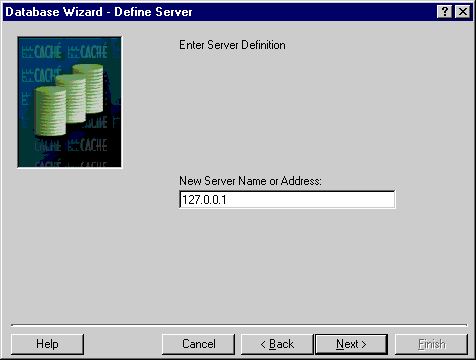
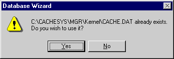
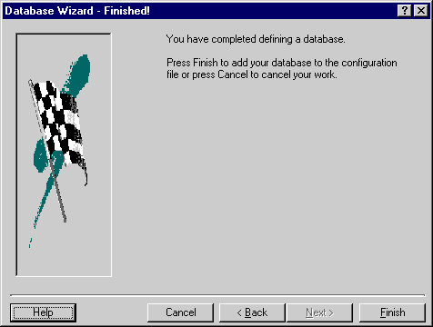

Running the Wizard
Running the Wizard
The following window appears by clicking on the Configuration manager's Wizard button. Select the 'Create a Database' wizard. (You can skip this step and go directly to the window below this one by clicking on the 'Add' button when on the Databases tab in the Configuration Manager.)

The following sequence of screens guide you through the collection of information for a new Database.

In case you don't see an appropriate server, as shown below, click the new server button and define one.

Here we define a local server for local development with Diamond.

The following screen defines where the Cache.dat database file will reside on your server/workstation.

Because we already copied the Diamond dataset (Cache.dat) into a directory named Kernel, we are asked the following question. Select YES and Cache will adopt Diamond as its own.

